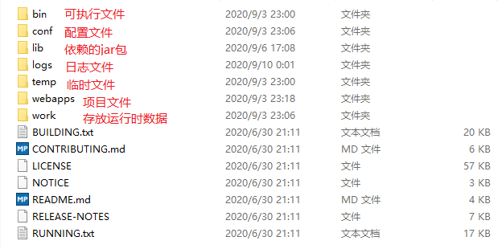

2020/09/10
Java web，是用java技术来解决相关web互联网领域的技术的总称。web包括：web服务器和web客户端两部分。
java在最早web客户端的应用有java applet程序，不过这种技术在很久之前就已经被淘汰了。java在服务器端的应用非常丰富，比如Servlet，jsp和第三方框架等等。java技术对web领域的发展注入了强大的动力。
javaweb开发是基于请求和响应的:
请求：浏览器（客户端）向服务器发送信息
响应：服务器向（客户端）浏览器回送信息
Web服务器一般指网站服务器，是指驻留于因特网上某种类型计算机的程序，可以处理浏览器等Web客户端的请求并返回相应响应，也可以放置网站文件，让全世界浏览；可以放置数据文件，让全世界下载。
开源小型web服务器 ，完全免费，主要用于中小型web项目，只支持Servlet和JSP 等少量javaee规范（就是JavaWeb编程接口）
1.创建普通的java类并继承HttpServlet
2.复写service方法
3.在service方法中书写逻辑代码
package S619Test;
import java.io.IOException;
import javax.servlet.ServletException;
import javax.servlet.http.HttpServlet;
import javax.servlet.http.HttpServletRequest;
import javax.servlet.http.HttpServletResponse;
public class S619App extends HttpServlet{
@Override
protected void service(HttpServletRequest req, HttpServletResponse resp) throws ServletException, IOException {
resp.getWriter().write("this is my first servlet.");
System.out.println("this is my first servlet.");
}
}
浏览器发送请求到服务器，服务器根据请求URL地址中的URI信息在webapps目录下找到对应的项目文件夹，然后在web.xml中检索对应的servlet，找到后调用并执行servlet
URL：http:localhost:端口号/虚拟项目名/servlet的别名
tomcat目录结构图
1.首先就是下载jdk和tomcat，安装好并配置好环境
2.进入安装好后的tomcat文件夹下的"\webapps\myapp"目录下，新建一个项目文件夹，名字自定义，这里取"myapp"
3.进入刚刚新建的文件夹"myapp"中，新建一个名为"WEB-INF"的文件夹
4.进入刚刚新建的文件夹"WEB-INF"中，新建一个名为"classes"的文件夹
5.将编译后的.class字节码文件拷贝到"classes"文件夹中，连文件夹一起拷贝，即bin目录下的文件夹
6.在"WEB-INF"文件夹下新建一个名为"web.xml"的文件，基础配置如下：
<?xml version="1.0" encoding="UTF-8"?>
<web-app xmlns="http://java.sun.com/xml/ns/javaee" xmlns:xsi="http://www.w3.org/2001/XMLSchema-instance" xsi:schemaLocation="http://java.sun.com/xml/ns/javaee http://java.sun.com/xml/ns/javaee/web-app_2_5.xsd" version="2.5">
<servlet>
<servlet-name>S619</servlet-name>
<servlet-class>S619App.S619Test.S619</servlet-class>
</servlet>
<servlet-mapping>
<servlet-name>S619</servlet-name>
<url-pattern>/S619</url-pattern>
</servlet-mapping>
<servlet>
<servlet-name>S621UserServlet</servlet-name>
<servlet-class>S619App.S621Servlet.S621UserServlet</servlet-class>
</servlet>
<servlet-mapping>
<servlet-name>S621UserServlet</servlet-name>
<url-pattern>/S621UserServlet</url-pattern>
</servlet-mapping>
</web-app>
其中servlet-name为其中servlet的名称，servlet与servlet-mapping的servlet-name要相同
servlet-class为类的路径，需为包含包名的路径
url-pattern为URL
完成后目录结构如下
webapps
-myapp
--index.jsp
---web.xml
---WEB-INF
----classes
-----S619App
------S619Test
-------S619.class
------S621Servlet
-------S621UserServlet.class
运行/bin/startup.bat，在浏览器地址栏输入"http://localhost:8080/myapp/S619"就可以访问页面了
startup.bat出现乱码
原因:字节流解码为字符串时，使用了错误的字符集（和编码所用字符集不一致）
1.记事本打开/conf/logging.properties
2.找到:找到如下配置项：java.util.logging.ConsoleHandler.encoding = UTF-8
3.将 UTF-8 修改为 GBK，修改后的效果为：java.util.logging.ConsoleHandler.encoding = GBK
网页乱码
对于java文件，在service方法开头加上：
req.setCharacterEncoding("UTF-8");
resp.setContentType("text/html;charset=UTF-8");
对于jsp文件乱码，在jsp开头加上
<%@ page language="java" contentType="text/html; charset=UTF-8" pageEncoding="UTF-8"%>
教学的老师是使用eclipse的，可以安装插件很方便的加载Tomcat服务。然而我用的时VSCode，每次都要手动复制文件，启动服务器，是一件很麻烦的事情。虽然VSCode也有相关的插件，但我用不来，只好自己写一个简单的了，这种情况一般用python来解决。
需要用到以下库
tkinter ：图形开发界面，方便操作
shutil 和 os ：用于复制文件
win32api ：用于启动服务器
代码如下，由于是个人使用，因此耦合性很弱，基本就是自己能用了
import shutil
import os
import tkinter as tk
import win32api
class Application(tk.Frame):
def __init__(self, master = None):
super().__init__(master)
self.project_name = "S630Ajax"
self.java_project_dir = r"D:\File\Java\SXT\07"
self.tomcat_project_dir = r"D:\File\Java\Tomacat\apache-tomcat-9.0.37"
self.master = master
self.pack()
self.create_widget()
def create_widget(self):
"""
定义按钮
"""
self.btn01 = tk.Button(root, text = "启动服务", width = 7, height = 2, command = self.startup)
self.btn02 = tk.Button(root, text = "停止服务", width = 7, height = 2, command = self.shutdown)
self.btn03 = tk.Button(root, text = "加载文件", width = 7, height = 2, command = self.load_file)
self.btn01.pack(side = "left", padx = "10")
self.btn02.pack(side = "left", padx = "10")
self.btn03.pack(side = "left", padx = "10")
def startup(self):
"""
开启服务
"""
file_path = self.tomcat_project_dir + r'\bin\startup.bat'
result = win32api.ShellExecute(0, 'open', file_path, '', '', 0)
if (result > 32):
print("服务启动:" + str(result))
def shutdown(self):
"""
停止服务
"""
file_path = self.tomcat_project_dir + r'\bin\shutdown.bat'
result= win32api.ShellExecute(0, 'open', file_path, '', '', 0)
if (result > 32):
print("服务关闭:" + str(result))
def load_file(self):
"""
导入文件
"""
pass
# self.load_xml_file()
self.load_class_file()
self.load_web_file()
def load_xml_file(self):
"""
导入web.xml文件
"""
print(self.project_name)
file_source_directory = self.java_project_dir + "\src\{0}\web.xml".format(self.project_name)
file_destination_directory = r"D:\File\Java\Tomacat\apache-tomcat-9.0.37\webapps\FengTai\WEB-INF"
shutil.copy(file_source_directory, file_destination_directory)
def load_class_file(self):
"""
导入class文件
"""
file_source_directory = self.java_project_dir + "\\bin\{0}".format(self.project_name)
file_destination_directory = self.tomcat_project_dir + "\webapps\FengTai\WEB-INF\classes\{0}".format(self.project_name)
file_type = ["class"]
self.getDirAndCopyFile(file_source_directory, file_destination_directory, file_type)
def load_web_file(self):
"""
导入Web文件
"""
file_source_directory = self.java_project_dir + "\src\{0}".format(self.project_name)
file_destination_directory = self.tomcat_project_dir + "\webapps\FengTai\{0}".format(self.project_name)
file_type = ["jsp", "css", "js", "jpg", "ico", "png", "gif"]
self.getDirAndCopyFile(file_source_directory, file_destination_directory, file_type)
def getDirAndCopyFile(self, sourcePath,targetPath,file_type):
"""
利用递归实现目录的遍历
@para sourcePath:原文件目录
@para targetPath:目标文件目录
"""
if not os.path.exists(sourcePath):
return
if not os.path.exists(targetPath):
os.makedirs(targetPath)
for fileName in os.listdir(sourcePath):
absourcePath = os.path.join(sourcePath, fileName)
abstargetPath = os.path.join(targetPath, fileName)
if os.path.isdir(absourcePath):
if (not os.path.exists(absourcePath)):
os.makedirs(abstargetPath)
self.getDirAndCopyFile(absourcePath, abstargetPath, file_type)
if os.path.isfile(absourcePath) and (absourcePath.split(".")[-1] in file_type):
print("复制文件:" + absourcePath)
rbf = open(absourcePath, "rb")
wbf = open(abstargetPath, "wb")
while True:
content = rbf.readline(1024*1024)
if len(content)==0:
break
wbf.write(content)
wbf.flush()
rbf.close()
wbf.close()
if __name__ == "__main__":
root = tk.Tk()
root.geometry("240x50+1110+640") # 窗口大小(长*宽+距离屏幕左边+距离屏幕上边)
root.title("Tomcat") # 标题
app = Application(master = root)
root.mainloop()